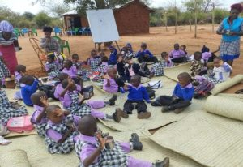
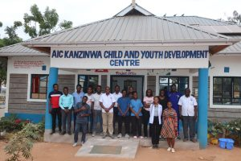
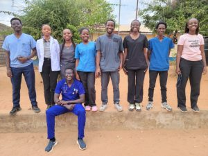
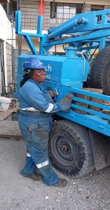
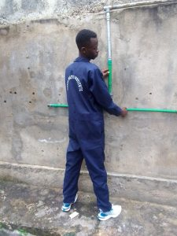
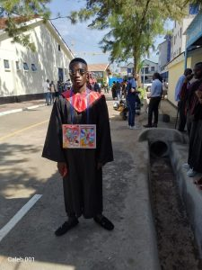
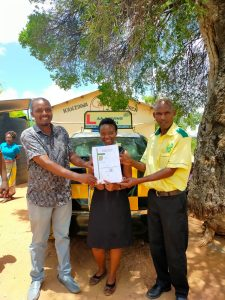

Building Hope Through Community Action: The AIC Maeni Classroom Project
For years, children at AIC Maeni Satellite attended their Saturday programming sessions inside the church building — a space that was too small, congested, and frequently disrupted. Through the unity and faith of the community, parents and caregivers came together to raise materials and labour to construct a dedicated classroom with water storage tanks. This newly completed structure now provides a safe, dignified learning environment for 30 registered beneficiaries.


AIC Kanzinwa Partners with Medical Missions Africa for Transformative Medical Outreach
In partnership with Medical Missions Africa (MeMA), AIC Kanzinwa CYDC successfully organised a two-day medical outreach event that brought free healthcare to hundreds of community members. The dedicated MeMA medical team — comprising doctors, nurses, and health workers — set up stations for screening, treatment, and health education. The outreach brought the WHO vision of complete physical, mental, and social well-being closer to reality for families across Kanzinwa and the surrounding area.





Success Story — Wayua Karumba: From Sponsorship to a Thriving Career
Wayua Karumba's journey from a sponsored child at AIC Kanzinwa CYDC to a skilled, employed professional is a testament to what sustained, compassionate support can accomplish. Through the Compassion International sponsorship programme, Wayua received the educational foundation and mentorship she needed to pursue technical training. Today she works confidently in a technical field — operating heavy equipment and contributing to her community and family. Her story is one of the most celebrated alumni successes of the KE0759 project.


Compassion Sunday Brings Hope and Unity to AIC Maeni
On April 27, 2025, AIC Maeni — a proud satellite of AIC Kanzinwa CYDC — hosted a special Compassion Sunday that brought together faith, community, and gratitude in a powerful celebration of the Compassion International partnership. The event drew an impressive gathering of families, leaders, supporters, and beneficiaries who joined together in worship, testimony, and commitment to the ongoing mission of releasing children from poverty in Jesus' Name.

Daniel Muthoka (KE07590076): A Journey of Hope and Opportunity
Coming from a humble background, Daniel Muthoka faced financial challenges that could have prevented him from pursuing his dreams. Through the Compassion International sponsorship programme at AIC Kanzinwa CDC, Daniel received support to study Plumbing and Pipe Fitting at the Kenya Water Institute (KEWI) in Nairobi. Today, Daniel is a fully certified plumber and pipe fitter — skilled in welding, valve installation, and water systems. He stands as a proud professional ready to support his family and give back to his community.



Titus Musyoki (KE07590066): Don't Wait for Opportunity — Create It
Titus Musyoki has achieved outstanding success in his pursuit of technical education. With a scholarship facilitated through the Compassion International programme at AIC Kanzinwa CDC, Titus joined the Kenya Water Institute (KEWI) and successfully completed his training in plumbing and pipe fitting. On his graduation day, Titus stood proud in his gown — a visible symbol of transformation from a young boy in a rural village to a skilled professional ready to shape his future. His message to others: don't wait for opportunity — create it.

The Project Trains Participants on Ball Making Skills
Participants at AIC Kanzinwa CYDC have undergone training on crafting sports balls from scratch — a hands-on vocational skill with real commercial value. The completed balls will be used within the community for sports and recreation activities, and surplus production will be sold to generate income for participants. This initiative exemplifies our commitment to economic empowerment: equipping youth with practical, marketable skills that translate directly into self-reliance and dignity.
A Beacon of Light: AIC Maeni — The Satellite of AIC Kanzinwa CDC (KE0759)
In March 2024, AIC Kanzinwa embarked on a recruitment drive for AIC Maeni, using Compassion International's criteria to identify the poorest of the poor. From this initiative, 30 programme participants were carefully selected. Children at the satellite hold their sessions outdoors — a vivid reminder of the need for infrastructure. As James 1:27 declares, true religion is to care for orphans and widows — and that scripture is being lived out at AIC Maeni every single Saturday.

AIC Kanzinwa CDC Signs MoU with AAKenya Driving School to Empower Youth and Caregivers
In a landmark partnership signed on 18 March 2024, AIC Kanzinwa CYDC formalised a Memorandum of Understanding with AAKenya Driving School — opening a direct pathway to professional driving qualifications for youth and caregivers. The MoU resulted in the empowerment of 12 sponsored youth, 10 survival fathers, 19 parents, and 20 community members through driving training. Participants were also provided with certified helmets through AAKenya's support, creating an immediate, practical route to sustainable income and employment.

AIC Kanzinwa Partners with NGAO to Address Drug Abuse and Child Neglect
In a collaborative effort, AIC Kanzinwa CYDC partnered with the National Government Administration Office (NGAO) to organise a public baraza targeting a community hotspot for drug abuse. Approximately 70% of community members in the identified area were found to be involved in illicit brew. The baraza, spearheaded by trained child neglect champions, brought together local leaders, parents, and law enforcement to address the root causes of drug abuse and its devastating impact on children and families.
Menstrual Health Initiative: Empowering Girls Through Health Support
At AIC Kanzinwa CYDC, we recognise that menstrual health is a crucial part of a young woman's life that deserves proper support, education, and care. Through this initiative, every girl in our programme has access to age-appropriate health education, sanitary supplies, and the dignity she deserves. The programme removes barriers that would otherwise keep girls out of school and away from their full potential — ensuring that a natural biological process never becomes an obstacle to education or opportunity.